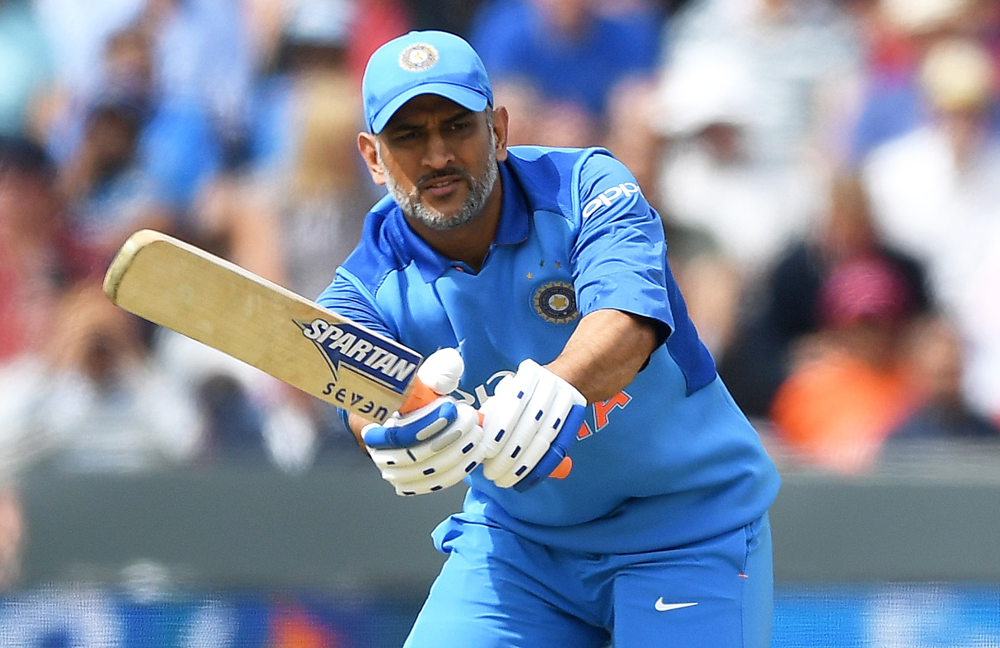

Welcome to Mahi world

MS Dhoni
Internal link
Mail Me
Contact Me
Mahendra Singh Dhoni (About this soundpronunciation (help·info) born 7 July 1981), commonly known as MS Dhoni, is an Indian international cricketer who captained the Indian national team in limited-overs formats from 2007 to 2016 and in Test cricket from 2008 to 2014. Under his captaincy, India won the 2007 ICC World Twenty20, the 2010 and 2016 Asia Cups, the 2011 ICC Cricket World Cup and the 2013 ICC Champions Trophy. A right-handed middle-order batsman and wicket-keeper, Dhoni is one of the highest run scorers in One Day Internationals (ODIs) with more than 10,000 runs scored and is considered an effective "finisher" in limited-overs formats.[2][3][4][5] He is also regarded by some as one of the best wicket-keepers in modern limited-overs international cricket.[6
Dhoni is a right-handed batsman and wicket-keeper. Initially, Dhoni appeared as a lower-order attacking batsman but he gradually changed his playing style to deal with high-pressure scenarios and his growing responsibility as a captain. He is a powerful hitter of the ball and is one of the fastest men in running between the wickets.[citation needed]
His wicket-keeping skill is widely praised by cricket experts. He is quickest when it comes to stumpings.[citation needed] He has a world record for the highest number of stumpings by any wicket-keeper.[clarification needed] He is the main wicket-keeper in the team but he occasionally bowls as a medium fast bowler.
Dhoni married Sakshi Singh Rawat, his schoolmate in DAV Jawahar Vidya Mandir, Shyamali.[150] a native of Dehradun, Uttarakhand, on 4 July 2010.[151] At the time of their marriage, she was studying hotel management and was working as a trainee at the Taj Bengal, Kolkata. After the retirement of Sakshi's father from his tea growing business, their family shifted to their native place, Dehradun.
- list of cups
- India 2007
- csk 2008
- india 2011
- csk 2012
- semi finalists
- india
- australia
- new zealand
- england
- finalists
- england
- new zealand
Client Side Scripting
Client-side scripting and server-side scripting. The client-side environment used to run scripts is usually a browser. The processing takes place on the end users computer. The source code is transferred from the web server to the users computer over the internet and run directly in the browser.
Server Side Scripting
Server-side scripting is a technique used in web development which involves employing scripts on a web server which produce a response customized for each user's (client's) request to the website. The alternative is for the web server itself to deliver a static web page.
WORLD CUP
ODI
|
TEST |
T20
|
10000 |
5666
|
7988
|
Link:link
Link:link
Link:link